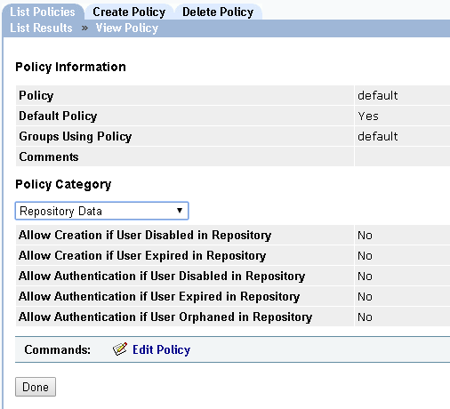
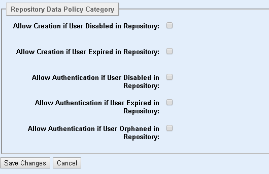

|
IdentityGuard Server 12.0 Administration Guide |
|
IdentityGuard Server 12.0 Administration Guide |
The repository data policies define the following:
● whether users can authenticate if their user entry is disabled or expired in the LDAP user repository (including a synchronized Active Directory repository)
● whether users can be created in Entrust IdentityGuard if their user entry is disabled or expired in the LDAP user repository (including a synchronized Active Directory repository)
● whether users can authenticate if their user entry is orphaned after a synchronization with the Active Directory user repository. For more information about synchronization with Active Directory, see Synchronize Active Directory users with an Entrust IdentityGuard database.
For detailed information about setting up repository data feature, see Suspend disabled and expired LDAP users.
To configure repository data policies
1. Log in to the Entrust IdentityGuard Administration interface as the administrator.
 On the
Windows computer where Entrust IdentityGuard is installed
On the
Windows computer where Entrust IdentityGuard is installed
2. In the main menu, click Policies.
A list of all policies appears on the List Policies tab.

3. Click any policy name to view its policy information.
The View Policy page appears and lists all policy settings.
4. From the Policy Category drop-down list, select Repository Data.

5. Click Edit Policy.
An editable version of the settings appears.

6. In the Repository Data Policy Category pane, configure the following settings. The policies apply to either an Entrust IdentityGuard LDAP repository or a synchronized Active Directory repository.
Click a policy to see its description.
7. Click Save Changes.